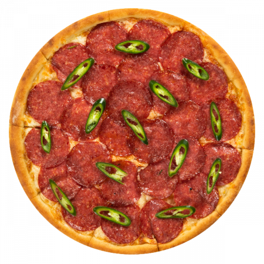

Pizza Diavola

Description
Diavola Pizza is a spicy pizza recipe that delivers big on flavor and heat! This fiery and delicious pizza is known for its spicy salami, chili pepper kick and melty mozzarella cheese. It's easy to make and is the perfect way to kick your pizza night up a notch. Whether you're hosting a pizza party with friends or just hunkering in with the family for a movie and pizza night, this Spicy Pizza Diavola is a great addition to the mix!
Ingredients
- Cornmeal
- Fresh Mozzarella
- Pizza Dough
- Spicy Salami
- Hot Peppers
- Pizza Sauce
- Basil
- Kalamata Olives
Steps
- Preheat the oven. Begin by preheating your oven to a scorching 500 degrees Fahrenheit (260 degrees Celsius). If you have a pizza stone, place it in the oven during preheating. The pizza stone will help create that crispy, restaurant-style crust.
- Roll out the pizza dough. While the oven is heating up, roll out your pizza dough on a lightly floured surface.
- Prepare the pizza sauce. Next, prepare your pizza sauce. You can make a homemade sauce or use your favorite jarred sauce. Set aside.
- Prepare the pizza toppings. Slice the fresh mozzarella, spicy salami, and Kalamata olives. Thinly slice the chili peppers, and chop the fresh basil. Having all your toppings ready makes assembling the pizza a breeze. Note - if your mozzarella is a bit wet, pat it with a paper towel to remove some of the moisture. This will help keep it from making the pizza too soggy.
- Pre bake the dough. By now, your oven should be at 500 degrees. Carefully remove the pizza stone and sprinkle it with cornmeal to help make the bottom of the dough crisp and to prevent sticking. Place the rolled-out dough on the stone and lightly poke it all over with a fork. Pre baking the dough ensures that the crust won't become too soft or soggy from all your toppings. Pre bake the dough for about 2 minutes, then remove with a pizza peel.
- Add the toppings. After the pre baking, remove the pizza stone from the oven and quickly add your toppings. Start with the thin layer of sauce, followed by the mozzarella, olives, chili peppers, and spicy salami.
- Bake. Return the pizza to the oven, and bake it for approximately 8 minutes on the middle rack. Keep an eye on it to make sure it doesn't overcook. The goal is to have the cheese nicely melted, and the crust golden and crispy.
- Cool and drizzle. Once your Spicy Diavola Pizza is done, carefully remove it from the oven (also, take it off the pizza stone with a pizza peel to avoid overcooking). Let it cool for a few minutes on a large tray or cutting board. While it's cooling, add the chopped basil on top for a burst of fresh flavor. For an extra layer of spiciness and sweetness, consider drizzling hot honey over the pizza before serving.
HOME